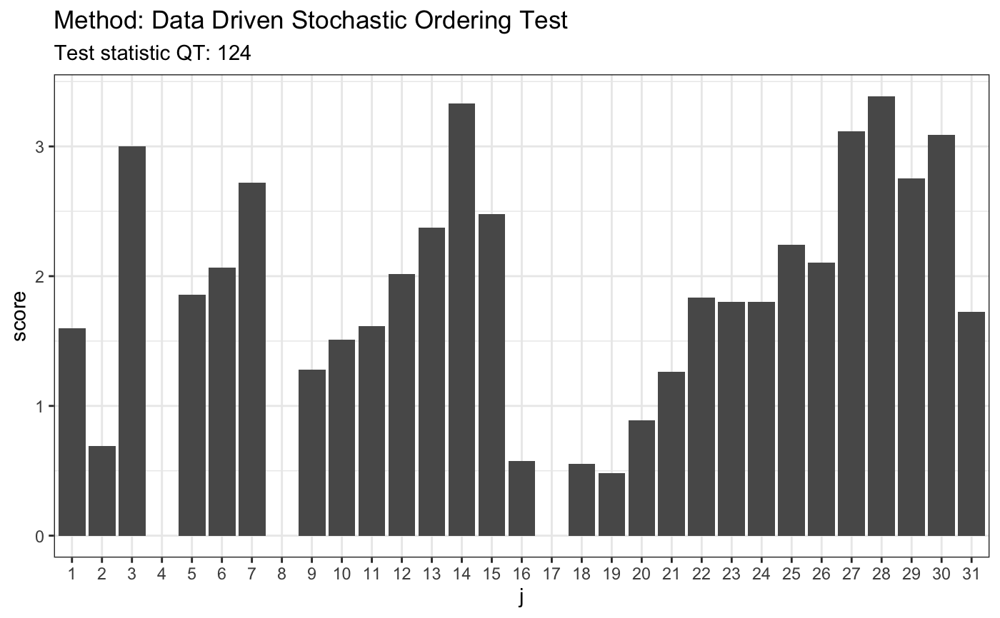
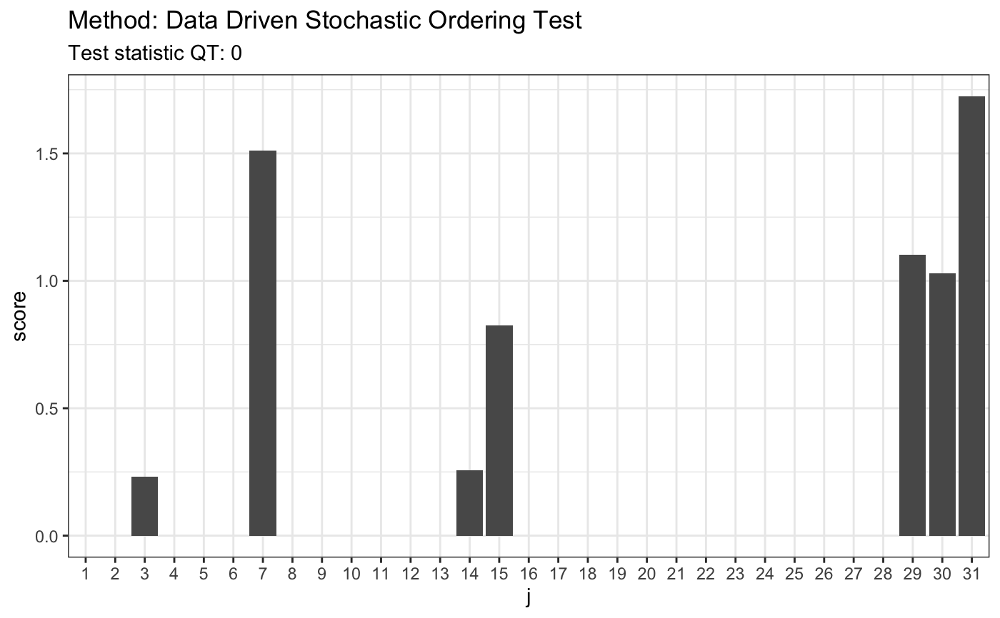

R/ddst.forstochdom.test.R
ddst.forstochdom.test.RdPerforms the data driven smooth test for detection of the stochastic ordering, as described in detail in Ledwina and Wyłupek (2012). Suppose that we have random samples from two distributions F and G. The null hypothesis is that F(x) >= G(x) for all x while the alternative is that at F(x) < G(x) for some x. Detailed description of the test statistic is provided in Ledwina and Wylupek (2012).
ddst.forstochdom.test( x, y, K.N = floor(log(length(x) + length(y), 2)) - 1, alpha = 0.05, t, nr = 1e+05, compute.p = TRUE, compute.cv = TRUE )
| x | a (non-empty) numeric vector of data |
|---|---|
| y | a (non-empty) numeric vector of data |
| K.N | an integer specifying a level of complexity of the grid considered, only for advanced users |
| alpha | a significance level |
| t | an alpha-dependent tunning parameter in the penalty in the model selection rule |
| nr | an integer specifying the number of runs for a p-value and a critical value computation if any |
| compute.p | a logical value indicating whether to compute a p-value or not |
| compute.cv | a logical value indicating whether to compute a critical value corresponding to the significance level alpha or not |
Nonparametric tests for stochastic ordering. Ledwina and Wyłupek (2012) https://doi.org/10.1007/s11749-011-0278-7
#> #> #># 1. Pareto(1)/Pareto(1.5) # H0 is false x <- rpareto(50, 2, 2) y <- rpareto(50, 1.5, 1.5) t <- ddst.forstochdom.test(x, y, t = 2.2, K.N = 4) t#> #> Data Driven Stochastic Ordering Test #> #> data: x y, t: 2.2, K.N: 4 #> QT = 124.46, T = 5 #>plot(t)# 2. Laplace(0,1)/Laplace(1,25) # H0 is false x <- rlaplace(50, 0, 1) y <- rlaplace(50, 1, 25) t <- ddst.forstochdom.test(x, y, t = 2.2, K.N = 4) t#> #> Data Driven Stochastic Ordering Test #> #> data: x y, t: 2.2, K.N: 4 #> QT = 129.93, T = 5 #>plot(t)# 3. LN(0.85,0.6)/LN(1.2,0.2) # H0 is true x <- rlnorm(50, 0.85, 0.6) y <- rlnorm(50, 1.2, 0.2) t <- ddst.forstochdom.test(x, y, t = 2.2, K.N = 4) t#> #> Data Driven Stochastic Ordering Test #> #> data: x y, t: 2.2, K.N: 4 #> QT = 0, T = 1 #>plot(t)# \dontrun{ # Generate distribution of test statistic N <- 1000 samp <- replicate(N, { x <- runif(30) y <- runif(30) # statistics with Schwartz penalty ddst.forstochdom.test(x, y)$statistic })#> Error in test.Q(x, y, m, n, K.N, t): argument "t" is missing, with no default#> Error in quantile(samp, 0.95): object 'samp' not found#> Error in sort(x): object 'samp' not found# }